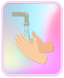
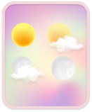
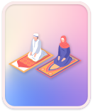

<ion-header translucent>
    <ion-toolbar>
        <ion-row>
            <ion-col size="2">
                <ion-buttons>
                    <ion-menu-button color="success"></ion-menu-button>
                </ion-buttons>
            </ion-col>
            <ion-col size="8">
                <div class="titleicon">

                    
                </div>
            </ion-col>
            <ion-col size="2">
                <div class="titleicon2">
                    
                </div>
            </ion-col>
        </ion-row>
    </ion-toolbar>
</ion-header>
<ion-content class="background">
    <div class="body">


        <ion-grid>
            <ion-row>
                <ion-col size="2">
                    <ion-fab-button color="light" style="zoom: 0.8;" (click)="retour()">
                        <ion-icon name="chevron-back-outline"></ion-icon>
                    </ion-fab-button>
                </ion-col>
                <ion-col size="10"></ion-col>
            </ion-row>
            <ion-row style="margin-top: 10%;margin-left: 3%;">
                <ion-col size="6">
                    
                    <p style="text-align: center;color: white;font-weight: bold;font-size: 10px;">LES ABLUTIONS</p>
                </ion-col>
                <ion-col size="6">
                    
                    <p style="text-align: center;color: white;font-weight: bold;font-size: 10px;">LES VÊTEMENTS DE PRIERE</p>
                </ion-col>
                <ion-col size="6">
                    
                    <p style="text-align: center;color: white;font-weight: bold;font-size: 10px;">LES PRIERES DE LA JOURNEE</p>
                </ion-col>
                <ion-col size="6">
                    
                    <p style="text-align: center;color: white;font-weight: bold;font-size: 10px;">LES ETAPES DE LA PRIERE</p>
                </ion-col>
            </ion-row>

        </ion-grid>

    </div>
</ion-content>